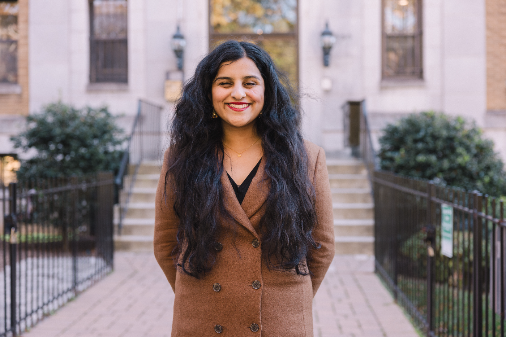

Neeraja Deshpande is a writer and editor based in Washington, D.C., working full-time as a policy analyst for Independent Women, a center-right women’s organization where she primarily focuses on education and gender. She is also a senior contributor to IWFeatures.com, Independent Women’s grassroots journalism initiative.
Her work on a wide range of topics, from K-12 schools to culture to technology, has appeared in print and online in outlets including City Journal, Pirate Wires, The American Spectator, and The Free Press (where she previously worked as a staff researcher), among others. Additionally, she has written and contributed to a variety of policy papers and reports, including one on fraud in the pediatric gender medicine industry that was published by the U.S. Department of Health and Human Services.
She is originally from Massachusetts and graduated magna cum laude from all-women’s Wellesley College.